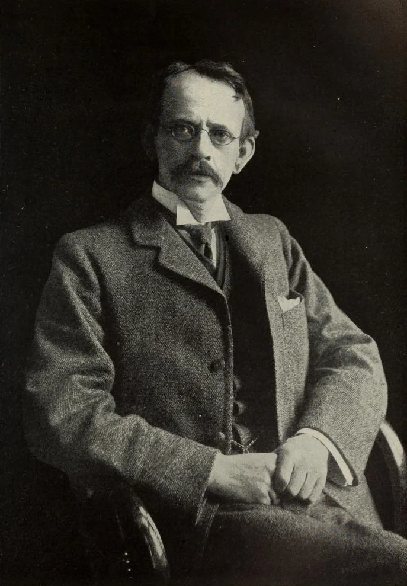
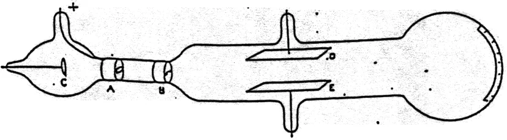
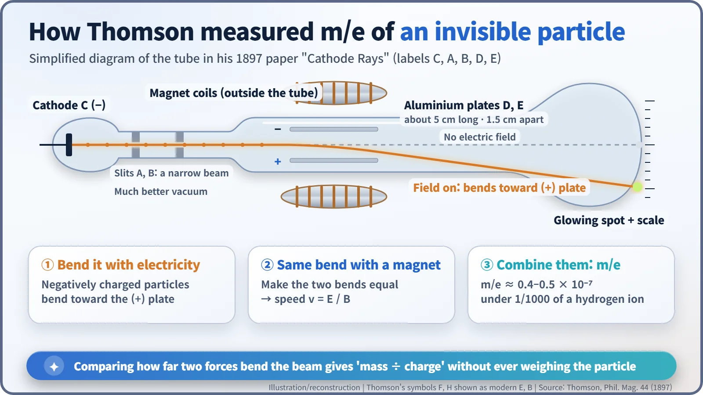
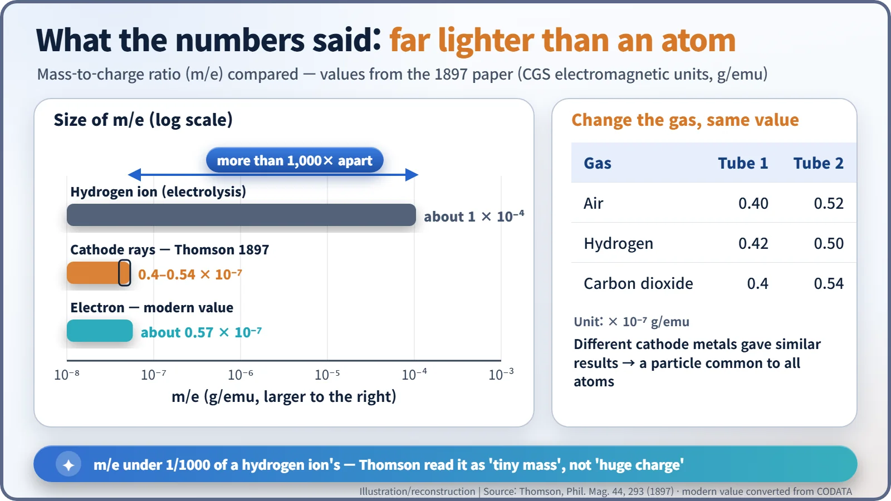
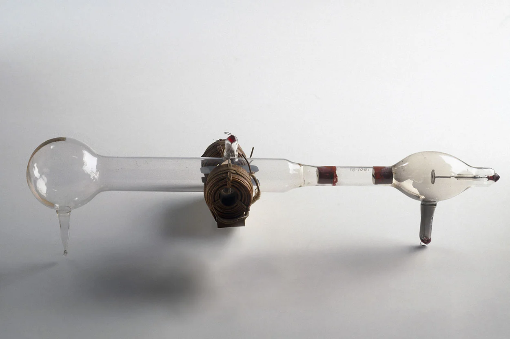

Nuclear History · 007
"He Thought I Was Pulling Their Legs" — J.J. Thomson Discovers the Electron (1897)
By comparing how electric and magnetic fields bent a beam, Thomson found a particle with a mass-to-charge ratio more than a thousand times smaller than a hydrogen ion's.
On 30 April 1897, J.J. Thomson told a London audience that cathode rays were streams of negatively charged particles far smaller than any atom. By bending the beam with electric and magnetic fields, he measured its mass-to-charge ratio and found it more than a thousand times smaller than that of a hydrogen ion. It was the first evidence that the atom has parts. [1]
"Pulling their legs"
Years later, a distinguished physicist who had been in the audience told Joseph John Thomson (1856–1940) that "he thought I had been 'pulling their legs.'" Thomson recorded the remark in his memoir Recollections and Reflections (1936), almost four decades after the event, so it is his own recollection rather than a recorded quote. [6]
The lecture took place on the evening of Friday, 30 April 1897, at the Royal Institution in London. There Thomson, professor at Cambridge's Cavendish Laboratory, claimed that the mysterious "cathode rays" glowing inside vacuum tubes were streams of particles far smaller than any atom.

A long-running quarrel: particle or wave?
Pump most of the air out of a glass tube, apply a high voltage, and something streams from the negative electrode (the cathode) and makes the far wall glow. Those were cathode rays. British physicists mostly thought they were electrically charged particles. Many German physicists thought they were waves rippling through the ether, like light.
The wave camp had a strong card to play. In 1883 Heinrich Hertz put two parallel metal plates inside a tube, charged them, and sent cathode rays between them. If the rays were charged particles, the electric field should have pushed them sideways. They did not budge. [3]
What Hertz missed and Thomson caught
Thomson settled the question with three experiments. [4]
- Charge and rays travel together. He used a magnet to steer the rays into a slotted metal cylinder wired to an electrometer, an instrument that measures charge. When the beam went in, the meter recorded a large negative charge; when the magnet steered the beam away, almost none.
- Hertz's experiment, done again. Thomson suspected that the little gas left in the tube was the culprit: the rays made that thin gas conduct electricity, and the conducting gas screened out the field between the plates. In his words, "the absence of deflexion is due to the conductivity conferred on the rarefied gas by the cathode rays." He pumped out much more gas, and this time the rays bent clearly toward the positive plate. Connect the top plate to the negative terminal and the beam went down; reverse it and the beam went up.
- Two bends compared. Electric and magnetic fields bend a moving charged particle in different ways, and they depend differently on its speed. Thomson adjusted the current in a pair of magnet coils until the magnetic bend matched the electric bend. That gave the particles' speed; combining the speed with the size of the bend gave the mass divided by the charge, the mass-to-charge ratio m/e.

The beam passed through slits in the anode A and a plug B, then between two aluminium plates "about 5 cm. long by 2 broad and at a distance of 1.5 cm. apart," and struck the end of the tube as a small glowing spot, whose movement he read off a scale stuck to the outside of the glass. [1]
Think of judging a ball you can never put on a scale by how sharply a crosswind curves its flight. Textbooks often say Thomson balanced the two forces so the beam ran straight; his paper actually describes matching the two deflections.

A number a thousand times too small
The results appeared in October 1897 in the Philosophical Magazine under the plain title "Cathode Rays." For cathode rays, m/e came out at roughly 0.4–0.5 × 10⁻⁷ in the units of the day. The smallest value then known, for the hydrogen ion in electrolysis, was 10⁻⁴. As Thomson wrote, "its value 10⁻⁷ is very small compared with the value 10⁻⁴." The particles' ratio was more than a thousand times smaller. [1]
| Gas in the tube | Tube 1 (× 10⁻⁷ g/emu) | Tube 2 (× 10⁻⁷ g/emu) |
|---|---|---|
| Air | 0.40 | 0.52 |
| Hydrogen | 0.42 | 0.50 |
| Carbon dioxide | 0.4 | 0.54 |
Changing the gas made almost no difference, and neither did changing the metal of the cathode. The particles were also fast: above 10⁹ centimetres per second, more than 10,000 km/s, at every pressure he tried.

A tiny ratio has two possible explanations, and Thomson spelled them out: "The smallness of m/e may be due to the smallness of m or the largeness of e." He backed the first option, pointing to Philipp Lenard's experiments on how far cathode rays travel through gases. He called the particles "corpuscles" and drew a sweeping conclusion: in cathode rays "we have … matter in a new state," the common "substance from which all the chemical elements are built up."
A common misconception
In 1897 Thomson did not measure the electron's mass and charge separately. He measured only their ratio. He made a rough estimate of the charge in 1899, and Robert Millikan pinned it down precisely with his oil-drop experiments between 1909 and 1913. Today we know the electron's mass is about 1/1,800 of a hydrogen atom's (about 1/1,836 of a proton's), close to the "about 1/1,700" Thomson quoted in his 1906 Nobel lecture. [3]

Not a one-man race
Thomson was not alone. In Germany, Emil Wiechert (1861–1928) told an audience in January 1897 that cathode-ray particles were thousands of times lighter than a hydrogen atom, and Walter Kaufmann published similar measurements of the ratio that same year. What set Thomson apart was the bold step of declaring the particle a building block shared by every atom.
He did not name it either. The word "electron" came from the Irish physicist George Johnstone Stoney, who proposed it in 1891 for the natural unit of electric charge. Other scientists later borrowed it for Thomson's particle, while Thomson himself stuck with "corpuscle" for years. Even in Britain, the corpuscle idea did not win wide acceptance until 1899, when Thomson returned with separate estimates of charge and mass. [5]
A door into the atom swings open
Thomson won the 1906 Nobel Prize in Physics, alone. The official citation honoured his "investigations on the conduction of electricity by gases," not, strictly, the discovery of the electron. [2]
His bigger legacy was a new question. If atoms contain light, negatively charged bits, where is the positive charge that keeps the whole atom neutral, and how is it arranged? That question drove the contest of atomic models that ended with the discovery of the atomic nucleus. Soon the beta rays from radioactive substances were also shown to be fast electrons. The first proof that the atom had parts was the true starting line of nuclear history.